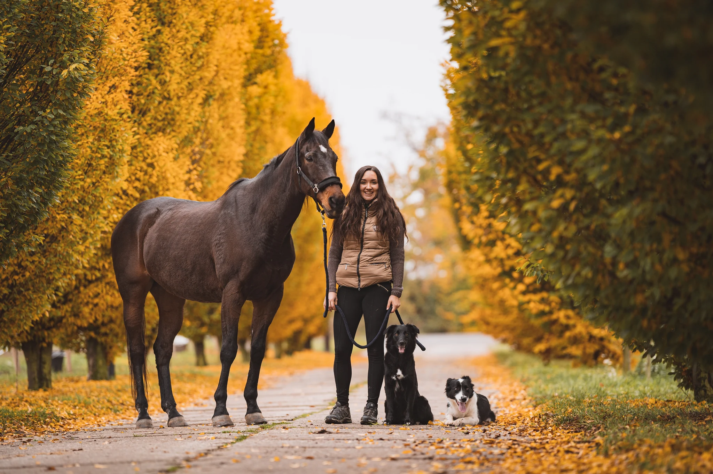

MVDr. Sabina Pospíšilová
Terénní veterinární lékařka
pro koně, ovce a malá zvířata
AKUTNÍ VÝJEZDY • CHIRURGIE • TERÉNNÍ MEDICÍNA
Nová Dědina 15, Konice
výjezdy po celé ČR
KDO JSEM?
Terénní veterinární lékařka zaměřená především na koně a chirurgii malých zvířat.
KDE PRACUJI?
Přímo v prostředí, kde zvířata žijí — ve stájích, na farmách i u chovatelů doma.
CO JE MÝM CÍLEM?
Individuální přístup — ať už jde o sportovního koně, stádo ovcí nebo rodinného psa.